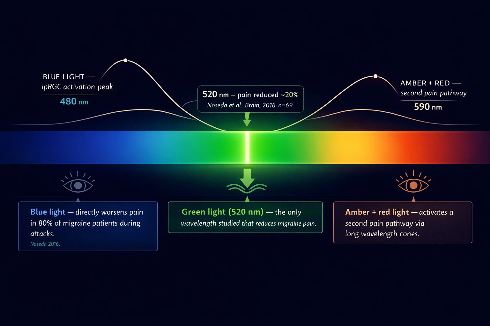
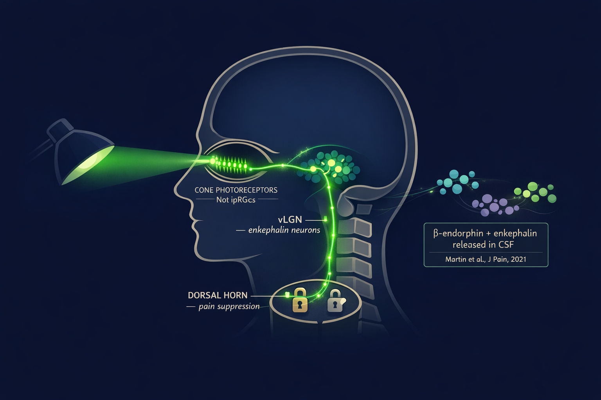
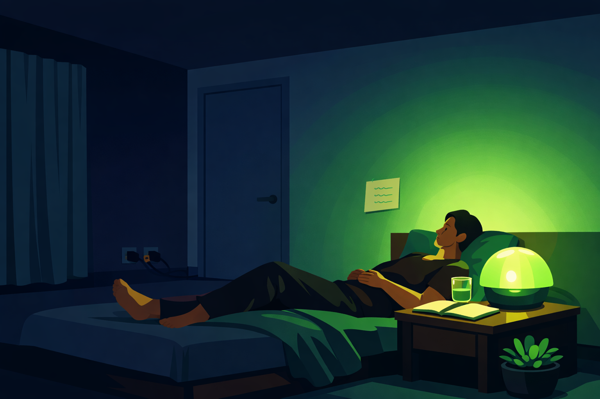

By Rustam Iuldashov
30 years lived experience with chronic migraine | Sources: 9 peer-reviewed references including Brain (n=69), Cephalalgia (n=29), Front. Neurol. (n=181, 3,232 attacks), Sci Transl Med, J Pain | Last updated: July 2026
Medical Review: This content is based on peer-reviewed research from Brain, Nature Neuroscience, Science Translational Medicine, Journal of Pain, Cephalalgia, and Frontiers in Neurology.
Important Notice: This article is for informational purposes only and does not replace professional medical advice. The author is not a licensed physician or healthcare professional. Always consult your neurologist before making treatment decisions.
Key Takeaways
- 520 nm green light activates a natural opioid pathway — it triggers β-endorphin and enkephalin release in the spinal cord via a retina-brainstem circuit.[4][5]
- Martin 2021 (n=29) found ~60% reduction in headache days with daily green light use over 10 weeks. Nearly everyone kept the device at trial’s end.[6]
- Lipton/Burstein 2023 (n=181, 3,232 attacks) found 61% of users improved in over half their attacks when using narrow-band green during episodes.[1]
- Narrow-band ≠ regular green bulb. Standard green LED contains blue, red, and amber — the wavelengths that hurt. Only 520 ± 10 nm narrow-band products replicate the research.[7]
- Even non-responders showed photophobia improvement, suggesting green light affects light sensitivity through a separate pathway from pain.[1]
- No adverse effects have been reported across all published studies to date.[1][6]
- Works best as part of a larger plan. Green light doesn’t replace medication or trigger management — it adds one drug-free, low-cost layer to the toolkit.
A Lamp That Costs $10 a Year to Run
The Harvard team had a simple question: could a strange laboratory finding — that one precise sliver of light eases migraine pain — be turned into something a patient could actually use at home?
In 2023, they published the answer. A real-world study. 181 people. Each one sitting in narrow-band green light during their attacks, in darkened rooms across 37 states. About 61% reported that their migraines improved in more than half the episodes they treated.[1]
Ten dollars a year in electricity. No prescription. No side effects.
This is not about filtering harmful light with tinted glasses — that’s a different strategy, covered separately. This is about something more active: bathing a room in one precise wavelength to calm the migraine brain during an attack, or to lower the threshold before one starts.
Filtering light is defense. Green light therapy is offense.
Why This One Wavelength Behaves Differently
In 2016, Harvard neuroscientist Rodrigo Noseda sat 69 migraine patients in front of different colors of light while they were mid-attack.[2] Blue made the pain worse. Amber made it worse. Red made it worse. Then came green — a narrow band around 520 nanometers — and something unexpected happened: it reduced pain intensity by roughly 20%.[2]
The mechanism is geometric. Green sits between the two most painful zones of the visible spectrum. Short-wavelength blue maximally activates intrinsically photosensitive retinal ganglion cells — the pain-wired light detectors in the eye. Long-wavelength red and amber activate a second pain pathway through cone photoreceptors. Green falls in a gap between them. It generates smaller electrical signals in the eye and brain than any other color. In a brain already hypersensitized by migraine, smaller signals mean less amplification, less suffering.[3]
But the “gap” explanation turned out to be only half the story. The other half is stranger and more useful.

The Opioid Connection You Didn’t Expect
Green light doesn’t just avoid hurting the migraine brain. It appears to medicate it.
In 2021, researchers at the University of Arizona discovered that green light exposure triggers the release of β-endorphin and proenkephalin in the cerebrospinal fluid and spinal cord of rats.[4] These are your brain’s natural opioids — the same class of molecules as morphine, made internally, released on demand. When the team used CRISPR gene editing to knock out the μ- and δ-opioid receptors, the analgesic effect of green light vanished completely.[4]
A 2022 study in Science Translational Medicine mapped the circuit precisely.[5] The signal travels from cone photoreceptors in the retina → into the ventrolateral geniculate nucleus (vLGN) in the brainstem → through enkephalin-producing neurons that project to pain-processing circuits in the spinal cord.[5] This is a visual pathway. You look at green light. Your brainstem releases natural painkillers.
Pause on that inversion. Not closing your eyes. Not blocking light. Looking at a specific light — to trigger endogenous pain relief.

The University of Arizona Study: Can Green Light Prevent Attacks?
Martin and colleagues enrolled 29 people who had already failed multiple treatments — oral medications, Botox, the standard arsenal.[6] Seven had episodic migraine. Twenty-two had chronic. Each participant received a strip of green LEDs with instructions: 1–2 hours of daily use, at home, for 10 weeks.
The before-and-after numbers were hard to ignore. Among episodic migraine patients, monthly headache days dropped from 7.9 to 2.4. Among chronic patients — people averaging 22 bad days a month — they fell to 9.4.[6] An average reduction across the whole group of about 60%. Most episodic patients (86%) and most chronic patients (63%) crossed the 50% responder threshold.[6] Sleep improved. Work capacity improved. Headache intensity and duration both fell.
No adverse events. And at the end of the study, when researchers offered participants the option to return the light strip, 28 of 29 chose to keep it.[6]
The study was small and uncontrolled — the authors said so directly. But when nearly everyone wants to keep the device at the end of a research trial, that signal is worth noting.
The Harvard Study: Can It Help During an Attack?
In 2023, Burstein and Lipton’s team tested a harder question: can narrow-band green light abort an active attack?[1]
They recruited 698 people who had already purchased a narrow-band 520 nm lamp. Of those, 181 completed six weeks of daily headache diaries. The protocol during an attack: enter a darkened room, use the lamp as the sole light source, stay for at least two hours.
Results across 3,232 documented attacks:
61% of participants were responders — improvement in more than half their treated attacks.[1]
42% were super-responders — improvement in three out of four or more attacks.[1]
Among responders, 82% of their attacks improved.[1]
Photophobia got better in 53% of all attacks — including in people whose headache pain didn’t respond.[1]
Many responders also slept better the same night.[1]
The honest caveat: this was an open-label study with no placebo arm. One co-author had financial ties to the lamp company. These are real limitations. The study notes them; so should you when you evaluate the evidence.
But 3,232 attacks is not a small sample. And photophobia improving even in non-responders hints that green light works through more than one pathway at once — calming the eye’s pain signal regardless of whether headache pain itself relents.
Narrow-Band vs. Your Hardware-Store Green Bulb
Most people make an expensive mistake here — in both directions.
A standard green LED bulb emits a broad band of light that contains blue, amber, and red wavelengths underneath the visible green color. Those are precisely the wavelengths that activate the migraine pain pathway. A regular green bulb from any store does not replicate what the studies measured. It may make things worse.[7]
Narrow-band means the light is engineered to emit only a tight window: 520 ± 10 nanometers, with minimal contamination from adjacent colors.[7] The Allay Lamp, built by Burstein’s team, meets this spec — flicker-free, portable, 40-day return policy, $149–199. Cheaper narrow-band green bulbs (Norb, Sunlight Inside Migraine Lamp) can turn any floor lamp into a therapy device for a fraction of the price.
What to look for
- Label must specify “520 nm” and “narrow-band” — both terms together
- Flicker-free LED output — flicker is itself a migraine trigger for many patients
- No color mixing — screens and standard bulbs combine wavelengths and negate the effect
- If neither “520 nm” nor “narrow-band” appears on the product page, it is not the same light the researchers used
Who Responds — and Who Doesn’t
The 2023 study didn’t bury the inconvenient finding. About 39% of participants were non-responders — people for whom green light made little difference to headache pain.[1]
Responders tended to be younger, more often episodic (rather than chronic), and more consistent in experiencing photophobia with their attacks.[1] More time in the light correlated with better outcomes — but only in responders. For non-responders, longer exposure didn’t help.[1]
This tells us something real about migraine’s heterogeneity. The vLGN–enkephalin circuit, like most pain-modulation systems, varies between individuals. After 30 years with migraine, I’ve stopped expecting any single tool to work universally. What the data establishes clearly is that green light is safe — no adverse effects have been reported across multiple studies and thousands of exposures.[1][6] For a condition as costly and treatment-resistant as migraine, a safe, cheap, drug-free option worth a personal trial is genuinely valuable.
How to Run Your Own Experiment at Home
The protocols from both studies are practical and replicable.
For preventive use (based on Martin 2021 [6])
Expose yourself to narrow-band green light for 1–2 hours per day, in normal ambient conditions. Evaluate after at least 8–10 weeks. The room doesn’t need to be dark; this is daily-use exposure.
For acute use during attacks (based on Lipton/Burstein 2023 [1])
Find a room where every other light source can be turned off. The narrow-band lamp becomes the only light in the space. Spend at least 2 hours there. Keep your eyes open — you don’t need to stare at the lamp directly, just exist in that light.

⚠️ When to Seek Emergency Help
Photophobia during a known migraine attack is not an emergency. But sudden, severe light sensitivity — especially when accompanied by a thunderclap headache, stiff neck, fever, confusion, or new vision changes — can signal a medical emergency, including meningitis, subarachnoid hemorrhage, or acute angle-closure glaucoma.
If you experience any of these symptoms alongside sudden photophobia, call your local emergency number immediately. Do not use green light therapy or any self-care approach in place of emergency evaluation.
Key Takeaways
- 520 nm green light activates a natural opioid pathway — triggers β-endorphin and enkephalin release via a retina-brainstem circuit.[4][5]
- Martin 2021 (n=29): ~60% reduction in headache days with daily use over 10 weeks. 28 of 29 participants kept the device.[6]
- Lipton/Burstein 2023 (n=181, 3,232 attacks): 61% of users improved in over half their attacks using narrow-band green during episodes.[1]
- Narrow-band ≠ regular green bulb. Only 520 ± 10 nm narrow-band products replicate the research.[7]
- Photophobia improved even in non-responders, suggesting a separate pathway from headache pain.[1]
- No adverse effects reported across all published studies.[1][6]
- Best used as part of a comprehensive plan alongside medical treatment and trigger management.
⚕️ Important Medical Disclaimer
This article is for informational and educational purposes only and does not constitute medical advice, diagnosis, or treatment. The author, Rustam Iuldashov, is not a licensed physician, neurologist, or healthcare professional. He is a patient advocate with 30 years of personal experience living with chronic migraine.
All clinical claims in this article are sourced from peer-reviewed research published in indexed medical journals. Study designs and sample sizes are noted where applicable.
Green light therapy is a non-pharmacological, non-FDA-approved approach for migraine management. It should complement — never replace — professional medical care. The studies cited are preliminary or open-label in design; no large-scale placebo-controlled RCT for green light therapy in migraine has been published to date. Consult your neurologist before beginning any new treatment approach, including non-pharmacological ones.
This content was last reviewed for accuracy in July 2026.
References
- Lipton RB, Melo-Carrillo A, Severs M, Reed M, Ashina S, Houle T, Burstein R. “Narrow band green light effects on headache, photophobia, sleep, and anxiety among migraine patients: an open-label study conducted online using daily headache diary.” Front. Neurol. 14:1282236 (2023). doi:10.3389/fneur.2023.1282236. Study design: Prospective open-label observational. n=181 completers / 3,232 attacks.
- Noseda R, Bernstein CA, Nir RR, et al. “Migraine photophobia originating in cone-driven retinal pathways.” Brain, 139(7):1971–1986 (2016). doi:10.1093/brain/aww119. Study design: Clinical + animal electrophysiology. n=69.
- Noseda R, Kainz V, Jakubowski M, et al. “A neural mechanism for exacerbation of headache by light.” Nat Neurosci, 13(2):239–245 (2010). doi:10.1038/nn.2475. Study design: Animal + clinical.
- Martin LF, Moutal A, Cheng K, Washington SM, Calligaro H, Goel V, et al. “Green light antinociceptive and reversal of thermal and mechanical hypersensitivity effects rely on endogenous opioid system stimulation.” J Pain, 22(12):1646–1656 (2021). doi:10.1016/j.jpain.2021.05.006. Study design: Animal mechanistic (CRISPR).
- Tang YL, Liu AL, Lv SS, et al. “Green light analgesia in mice is mediated by visual activation of enkephalinergic neurons in the ventrolateral geniculate nucleus.” Sci Transl Med, 14(661):eabq6474 (2022). doi:10.1126/scitranslmed.abq6474. Study design: Animal mechanistic (optogenetics + ablation).
- Martin LF, Patwardhan AM, Jain SV, et al. “Evaluation of green light exposure on headache frequency and quality of life in migraine patients: A preliminary one-way cross-over clinical trial.” Cephalalgia, 41(2):135–147 (2021). doi:10.1177/0333102420956711. Study design: One-way crossover clinical trial. n=29.
- Optimizeyourbiology.com. “3 Best Green Lights for Migraines: Lab Tested.” (2025). Spectral comparison of narrow-band vs. standard green LED products.
- Martin LF, Cheng K, Washington SM, et al. “Green light exposure elicits anti-inflammation, endogenous opioid release and dampens synaptic potentiation to relieve post-surgical pain.” J Pain, 24:509–529 (2023). doi:10.1016/j.jpain.2022.10.011. Study design: Animal mechanistic.
- Melo-Carrillo A, Rodriguez R, Ashina S, et al. “Psychotherapy treatment of generalized anxiety disorder improves when conducted under narrow band green light.” Psychol Res Behav Manag, 16:241–250 (2023). doi:10.2147/PRBM.S388042. Study design: Open-label proof-of-concept. n=13.

How We Create Content
- Peer-reviewed sources only. This article cites Brain, Nature Neuroscience, Science Translational Medicine, Journal of Pain, Cephalalgia, and Frontiers in Neurology.
- Study transparency. Study design and sample sizes noted for all clinical references.
- Source verification. All claims backed by numbered references with DOI links.
- Experience + Science. 30 years personal migraine experience combined with peer-reviewed evidence.
- Conflict-of-interest transparency. Financial relationships between researchers and commercial products are disclosed within the article.
- Regular updates. Articles reviewed when significant new research emerges.
- No commercial relationships. No funding from any green light therapy manufacturer.
Log Your Light Exposure. See What Actually Works for You.
Migraine Companion lets you track green light sessions alongside your attack diary — so you can see mathematically whether narrow-band light is shortening your attacks. Built by someone who has lived this for 30 years.
Last reviewed: July 2026
Next scheduled review: January 2027